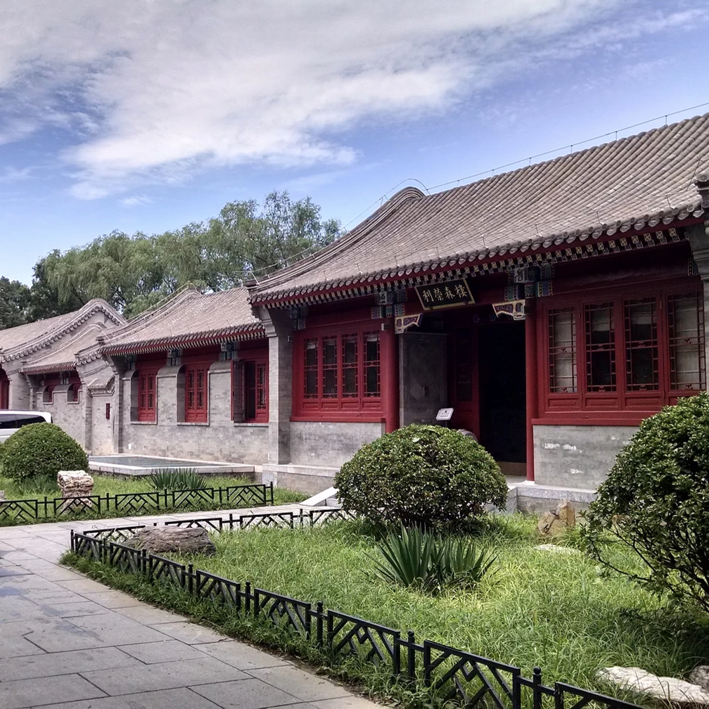

Instructors

Course Designed by Robert Chang, MD
Assistant Professor of Ophthalmology
Stanford School of Medicine
Stanford BioDesign Faculty Fellow’16
Stanford School of Medicine
Stanford BioDesign Faculty Fellow’16
Dr. Robert Chang, an alum of the Biodesign Faculty Fellow Program runs a busy glaucoma and cataract surgical practice with special expertise in minimally invasive glaucoma surgery and complex cataract removal. He is an expert on optical coherence tomography (OCT) having helped the development of Zeiss Cirrus. He emphasizes precision medicine using OCT and visual fields.
Besides state of the art clinical care, cutting edge research, and world class education (> 100 lectures including international teaching and volunteer work), he is involved in the development of novel mobile health devices and digital health startups as well as scientific advisor to multiple pharmaceutical and medical device companies. Current research interests include: differentiating high myopia from glaucoma, improving glaucoma medication compliance, eye care screening with mobile devices, computer vision machine learning, and validating and commercializing new medical devices and digital health.
Dr. Chang co-invented the EyeGo Smartphone imaging adapter, which was licensed to Digisight Technologies (now called the PAXOS scope https://www.digisight.net/ digisight/paxos-scope.php). He brings translational medtech to the market to improve patient care. He is also the co-creator of an immersive, cross-cultural Stanford-China entrepreneurship graduate seminar (www.dhealthchina.com) and leads several hybrid biodesign hackathon seminars including Hong Kong (www.dreamcatchers.hku.hk/? p=1268), Brazil (www.hipuc.com), Beijing, and Stanford.
He is a Fellow of the Stanford Center of Innovation for Global Health, a Biodesign Faculty Fellow, and Lean Launchpad educator. He also won first place in the 2015 Philips Healthsuite Hackathon and the 2016 Robert Howard Design Award to improve his team's latest consumer medtech wearable for air pollution.
Besides state of the art clinical care, cutting edge research, and world class education (> 100 lectures including international teaching and volunteer work), he is involved in the development of novel mobile health devices and digital health startups as well as scientific advisor to multiple pharmaceutical and medical device companies. Current research interests include: differentiating high myopia from glaucoma, improving glaucoma medication compliance, eye care screening with mobile devices, computer vision machine learning, and validating and commercializing new medical devices and digital health.
Dr. Chang co-invented the EyeGo Smartphone imaging adapter, which was licensed to Digisight Technologies (now called the PAXOS scope https://www.digisight.net/ digisight/paxos-scope.php). He brings translational medtech to the market to improve patient care. He is also the co-creator of an immersive, cross-cultural Stanford-China entrepreneurship graduate seminar (www.dhealthchina.com) and leads several hybrid biodesign hackathon seminars including Hong Kong (www.dreamcatchers.hku.hk/? p=1268), Brazil (www.hipuc.com), Beijing, and Stanford.
He is a Fellow of the Stanford Center of Innovation for Global Health, a Biodesign Faculty Fellow, and Lean Launchpad educator. He also won first place in the 2015 Philips Healthsuite Hackathon and the 2016 Robert Howard Design Award to improve his team's latest consumer medtech wearable for air pollution.
Co-Instructor Ravi Pamnani, MS
Director of Marketing & Medical Affairs
Transcend Medical Alcon
Stanford BioDesign Innovation Fellow’11
Transcend Medical Alcon
Stanford BioDesign Innovation Fellow’11
Ravi Pamnani, co-founder of HiLabs, led the market development efforts at Transcend Medical, a venture-backed medical device startup focused on innovative therapies for glaucoma which was recently acquired by Novartis (Alcon). He has now joined a new medical device incubator. He was previously an associate at ExploraMed a medical device incubator, and a Senior R&D Engineer for Guidant's Cardiac Surgery division (acquired by MAQUET Cardiovascular in 2008)
Ravi is an alumnus of Stanford’s Biodesign Innovation Fellowship program, and an M.S. in Management Science and Engineering and a B.S. in Mechanical Engineering, both from Stanford University. He is a frequent lecturer on medical device development and innovation.
Ravi is an alumnus of Stanford’s Biodesign Innovation Fellowship program, and an M.S. in Management Science and Engineering and a B.S. in Mechanical Engineering, both from Stanford University. He is a frequent lecturer on medical device development and innovation.
Medtech Hackathon
August 13-26, 2016
Stanford Center at Peking University (SCPKU)
Beijing, China
Stanford Center at Peking University (SCPKU)
Beijing, China

Learn how to work in cross-functional teams consisting of programmers,designers,marketers
Observe real-world healthcare challenges through direct immersion in Chinese hospitals
Develop working prototypes through wireframing, web and/or smartphone app development, and potential integration with sensors/wearables
Create a viable business plan with the support of Chinese business experts and entrepreneurs
Sponsored by Stanford Center at Peking University & PKU School of Innovation and Entrepreneurship
Observe real-world healthcare challenges through direct immersion in Chinese hospitals
Develop working prototypes through wireframing, web and/or smartphone app development, and potential integration with sensors/wearables
Create a viable business plan with the support of Chinese business experts and entrepreneurs
Sponsored by Stanford Center at Peking University & PKU School of Innovation and Entrepreneurship